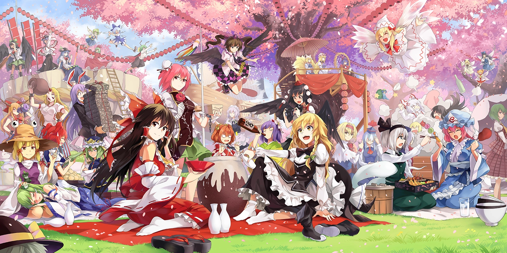
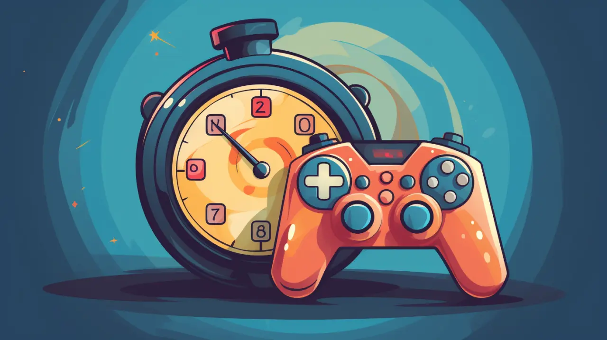
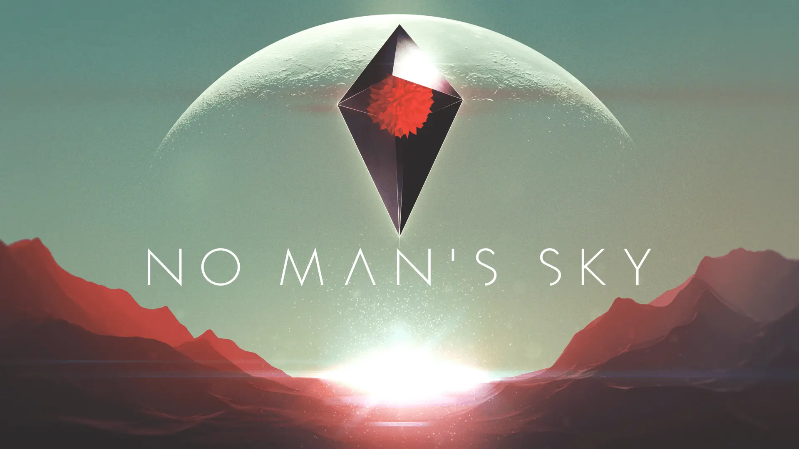

Latest Posts

Kiana Beatriz De Jesus | 5 min read
The reasons we play games and what makes them so addictive
Francine Louise Sanchez | 3 min read
Looking through the Rich and Decades-long History of Touhou Project
Reign Santos | 3 min read
The Time Worth of Gaming
Joseph Yohan Paras | 3 min read
No Man’s Sky: Get Lost in the Infinite Cosmos

Jasper Andrew Chan | 4 min read
FPS Spotlight: A Deep Dive into The Finals

Mark Angelo Lim | 2 min read
The Rise of Gacha Games